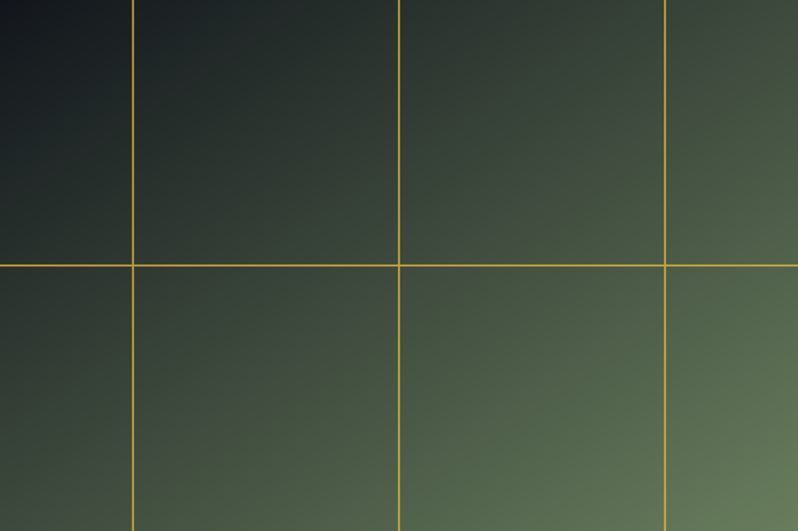

a · la forma del sitio: overflow:hidden + scroll(inline nearest) + range

b · a sin overflow:hidden
c · a con timeline por nombre --sc
d · a sin animation-range
e · c sin animation-range
js · control: el JS escribe --prog